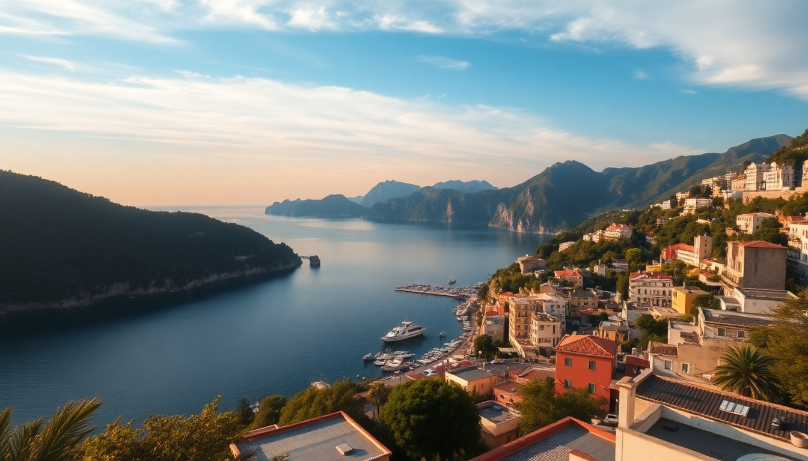

Best Beaches in Italy: Amalfi Coast, Sardinia & Sicily

I spent three weeks hopping between the Amalfi Coast, Sardinia, Sicily, and Cinque Terre last summer, and the beach situation is wildly different at each stop. Some are pebbly coves you need a boat to reach; others are sprawling sandbars packed with umbrellas. Here’s what actually worked, what didn’t, and where I’d go back.
Is Positano worth the hype for beach time?
Positano looks like a postcard, but the main beach—Spiaggia Grande—is cramped, expensive, and crowded by 10 a.m. We paid €35 for two deck chairs at one of the lidos, and the water was so full of boats you couldn’t swim without dodging a dinghy. If you’re set on a beach day here, skip the main strip and hike to Fornillo Beach instead. It’s a 15-minute walk up the stairs behind the church, quieter, and the water is cleaner. For a real escape, book a boat trip with Lucibello (they run small groups from the port) to hit Cala di Mitigliano—a cove you can only reach by sea, with turquoise water and zero crowds.
Which Sardinian beaches are actually worth the drive?
Sardinia’s beaches are the best in Italy, but you need a car. We rented from Noleggiare at Olbia Airport and drove straight to Cala Brandinchi (nicknamed “Little Tahiti”). The sand is fine and white, the water shallow for 50 meters out—great for kids. Arrive before 9 a.m. or the parking lot fills. On the other side of the island, Cala Goloritzé requires a 45-minute hike from the Baunei trailhead, but you’re rewarded with a pebble beach and a limestone arch. Bring water and shoes for the rocks. For a lazy afternoon, Spiaggia La Pelosa near Stintino has Caribbean-blue water, but it’s touristy and you have to pay for entry in summer. I’d skip it and drive an extra 20 minutes to Le Saline—less crowded, same color.
What’s the real beach situation in Sicily?
Sicily is huge, so pick your coast. On the east side, Isola Bella in Taormina is a tiny pebble beach connected to a nature reserve by a sandbar. It’s photogenic but packed by noon. I preferred Mazzarò just below the cable car station—same views, fewer people. On the south coast, Scala dei Turchi near Realmonte is a white cliff formation that doubles as a beach. Swim off the rocks, but don’t expect sand. For actual sandy swimming, head to San Vito Lo Capo in the northwest. The town has a long crescent beach with soft sand and a lifeguard. We ate grilled swordfish at Cous Cous Fest—the local specialty—and it beat any restaurant in the tourist zone. One warning: avoid Cefalù beach in August. It’s a sardine can of umbrellas and screaming kids.
Can you actually swim in Cinque Terre?
Cinque Terre isn’t a beach destination—it’s a hiking-and-wine spot where you occasionally jump into the sea. Monterosso al Mare has the only real sandy beach in the five villages. The public section is free but cramped; the lido (Bagno Sereno) rents chairs for €20 and has a bar with decent Aperol spritzes. Vernazza has a tiny pebble cove right in the harbor, but it’s more of a dip spot than a swim. The best swimming in the area is actually a 10-minute train ride away in Levanto—a wide, sandy beach with fewer tourists and a proper promenade. We took the Cinque Terre Express (€5 each way) from Monterosso and spent the afternoon there. If you want a cliff jump, Corniglia has a set of concrete steps down to the water near the train station—locals jump off the rocks. It’s not a beach, but it’s the most fun I had in the region.
When is the best time to visit these beaches?
June and September are the sweet spots. In June, the water is warm enough (22–24°C), crowds haven’t peaked, and prices at hotels like Hotel Poseidon in Positano drop by 30% compared to August. September is even better—the sea is warmest, and the kids are back in school. I did Sardinia in late June and had Cala Brandinchi nearly to myself on a Tuesday. July and August are chaos: deck chairs cost double, trains to Cinque Terre are sardine-packed, and parking in Sardinia is a nightmare. Avoid August unless you enjoy queuing for everything.
What should I pack for a day at these beaches?
- Water shoes—pebbles are sharp at Fornillo and Mazzarò.
- A dry bag—boat trips to Cala di Mitigliano leave no storage.
- Sunscreen—Italian pharmacies sell high-SPF stuff, but it’s €15 a bottle.
- Cash—many lidos and beachside bars don’t take cards, especially in Sardinia.
- A towel that folds small—space is tight on the rocks at Corniglia.
FAQ
Is it worth renting a car for Sardinia beaches? Yes. Buses are unreliable and don’t reach the best coves. We rented from Noleggiare at Olbia—€250 for four days in June, manual transmission. Book ahead.
Which beach is best for families? Monterosso in Cinque Terre or San Vito Lo Capo in Sicily. Both have lifeguards, shallow entry, and nearby restaurants with kids’ menus. Avoid Positano’s Spiaggia Grande—too crowded.
Can I visit these beaches without a hotel reservation? You can day-trip to most, but parking is a hassle. For Positano, park at the Parcheggio Mandara (€30/day) and walk down. For Cinque Terre, leave the car at La Spezia and take the train.
Conclusion
- Positano is for the photos, not the swimming—hit Fornillo or take a boat to Cala di Mitigliano.
- Sardinia delivers the best sand; go to Cala Brandinchi or Cala Goloritzé, and rent a car.
- Sicily has variety—Isola Bella for views, San Vito Lo Capo for actual beach time.
- Cinque Terre is a hike-first, swim-second destination; use Levanto for a proper beach day.
- Travel in June or September to avoid the crush and save money.